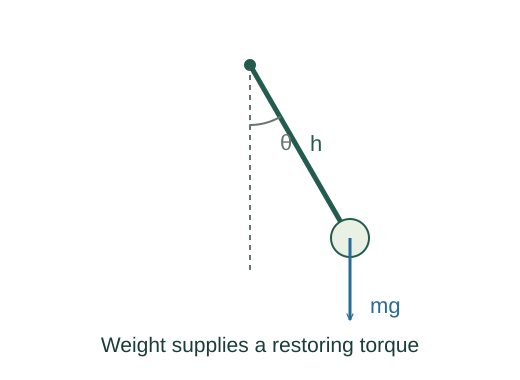
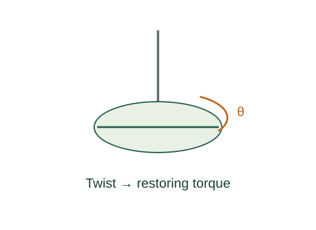

Derive torsion and physical-pendulum periods
Fixed-axis angular acceleration is torque divided by inertia.
What the symbols mean
I: inertia about the pivot; κ: torsion constant; h: pivot-to-centre-of-mass distance; θ: angular displacement.
When this applies
Rigid body, frictionless fixed pivot, linear torsional restoring torque or small gravitational angle.
Developing the argument

Apply rotational dynamics
Fixed-axis angular acceleration is torque divided by inertia.
Use the torsion model
A linear torsion wire supplies τ = −κθ. Compare θ̈ = −(κ/I)θ with harmonic motion.

Find the gravitational torque
Weight acts at the centre of mass in uniform gravity. Its restoring torque is −Mgh sin θ, approximately −Mghθ for small angles.
Identify the physical-pendulum frequency
The coefficient of minus displacement is again ω². For a point mass I = Mℓ² and h = ℓ, recovering the simple-pendulum period.
A worked example
A uniform rod pivoted at one end has I = ML²/3 and h = L/2, giving T ≈ 2π√(2L/(3g)).
Derivation behind this calculation ↗A point to keep straight
Use inertia about the actual pivot. A central inertia alone gives the wrong physical-pendulum period.
Check the assumptions and derivation ↗